How To Adopt
All of our pups are in loving foster homes so meet and greets are by appointment only.
We do require the application to be filled out before scheduling a meet and greet. This is essential for a few reasons:
- to ensure the desired dog would be compatible in the home of the potential adopter
- to ensure the potential adopter would be approved to adopt a dog
- because we are foster based, we like to know who will be coming to/into our homes to meet our foster babies!
Once the application is completed it will be reviewed and you will be contacted by the Saturday following your submission. Our dogs are not adopted out on a "first come, first served" basis, so the application process is key.
The adoption fee is $250. All of our dogs are age-apropriately vetted, microchipped, spayed/neutered (if over 6 months - if under 6 months, refer to alteration contract in adoption application) and crate trained before adoption.
We do everything we can to ensure our dogs and puppies are adopted into the most perfect home for them!
Our Current Adoptables
Krona
Pit Bull Terrier Mix
Adult Female Small
 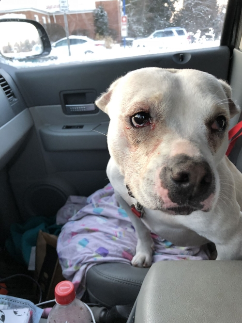
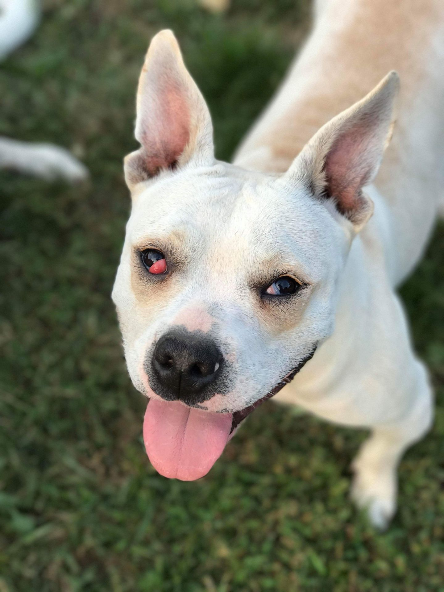
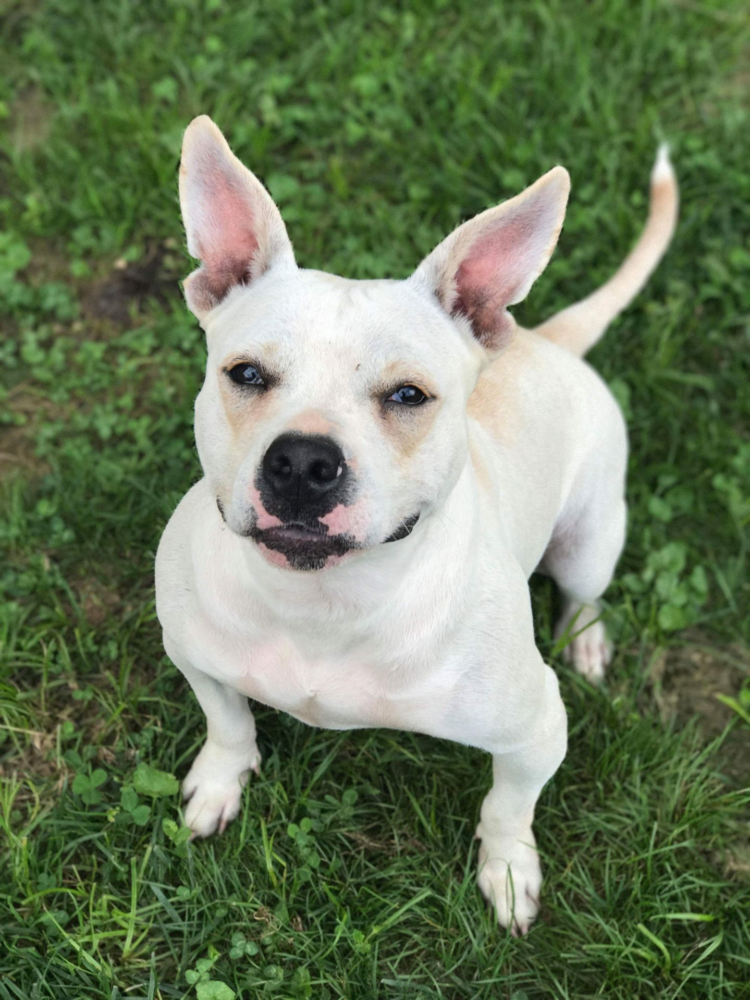
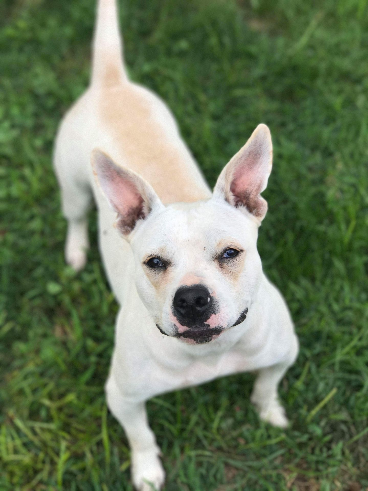
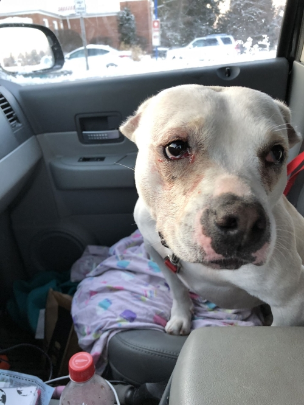
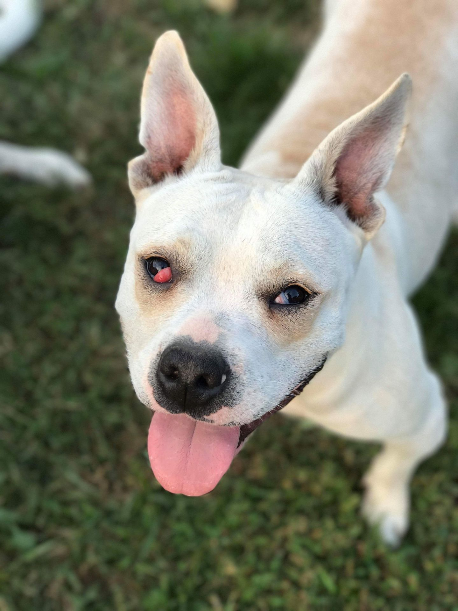
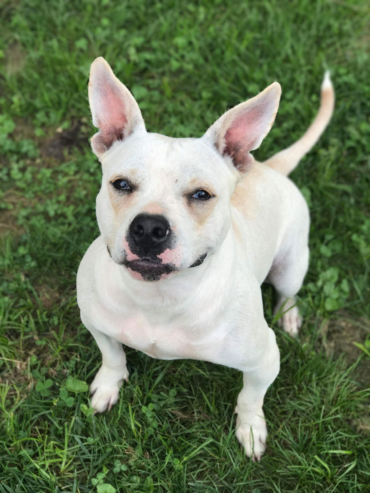
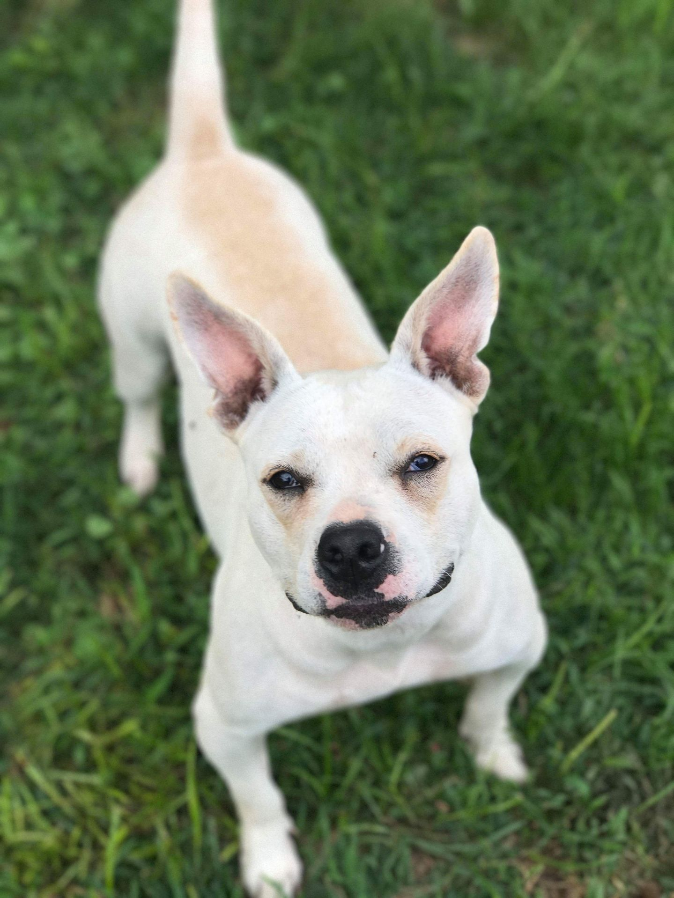
Characteristics
Friendly, playful, energetic
Coat length
Short
Coloration
White / Cream
House-trained
Yes
Health
Vaccinations up to date, spayed / neutered.
Good in a home with
Other dogs, children.
Prefers a home without
Cats.
Krona is a friendly little girl. She loves kids and other animals that are larger than her. She does not do well with cats or small dogs. Krona recently underwent a cherry-eye surgery and is recovering nicely. She is around 2yo and 34lbs. She does require grain free, high quality food and a joint supplement as she is bow-legged in the front but it does not effect her when she regularly takes her joint supplement (the rescue will provide joint supplement for 1 year with adoption). She LOVES to play with basketballs and sounds like a little piggy! She is adorable!
If interested in adopting please fill out and submit an application!
Adoption fees and procedure is outlined in the app. Thanks!
Millie
Foxhound
Adult Female Medium

.jpg) 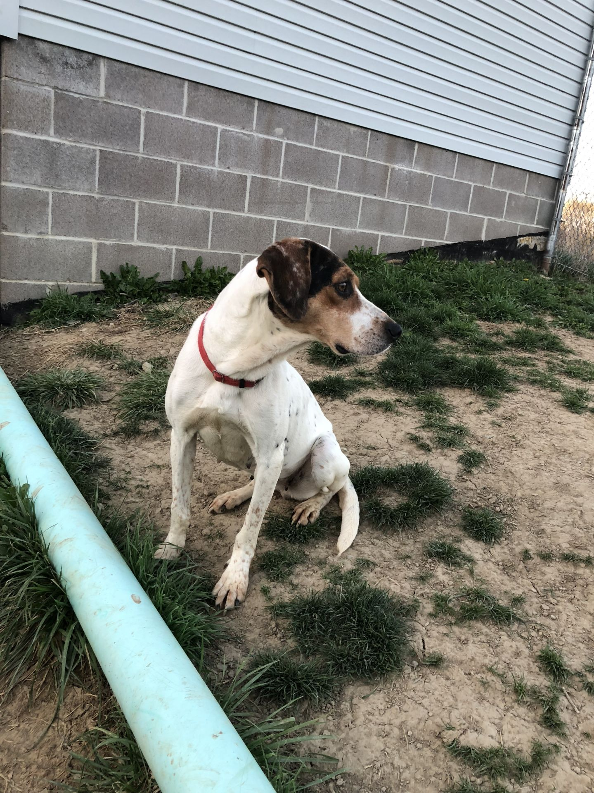
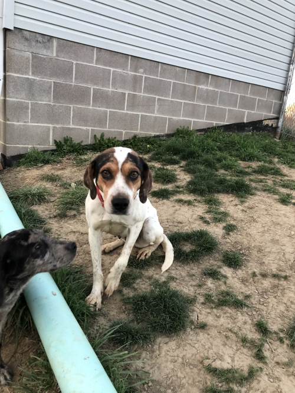
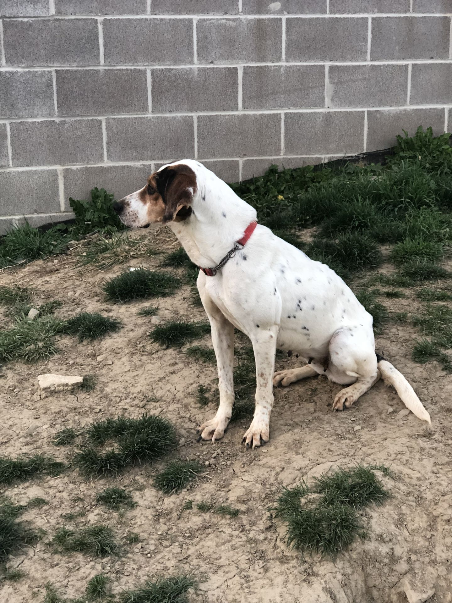
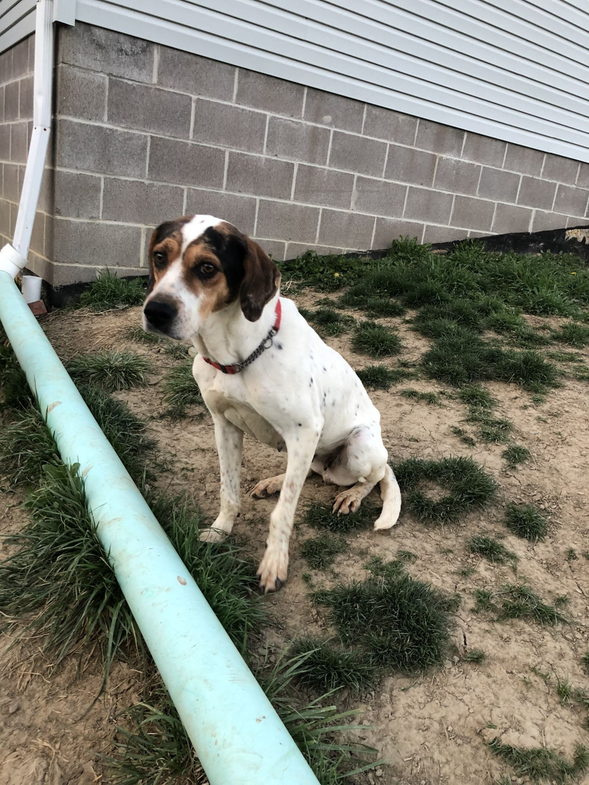
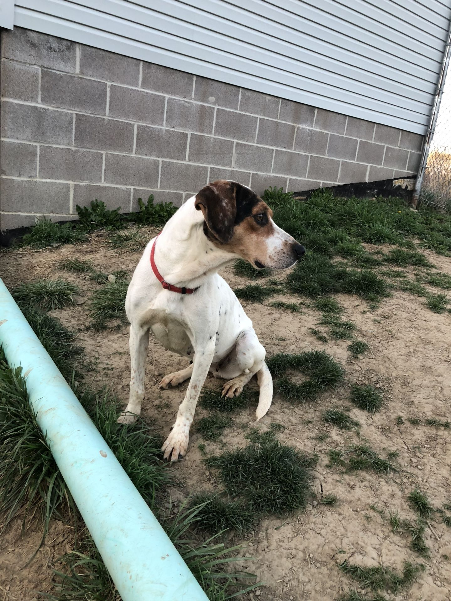
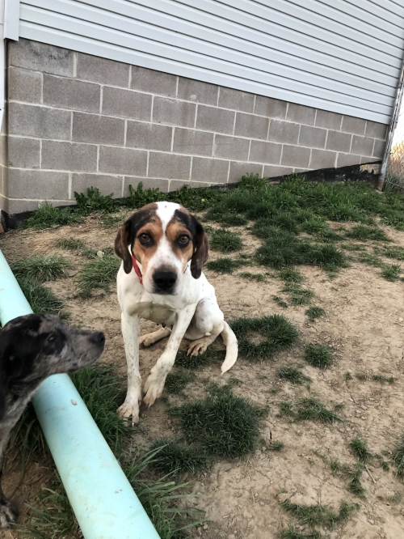
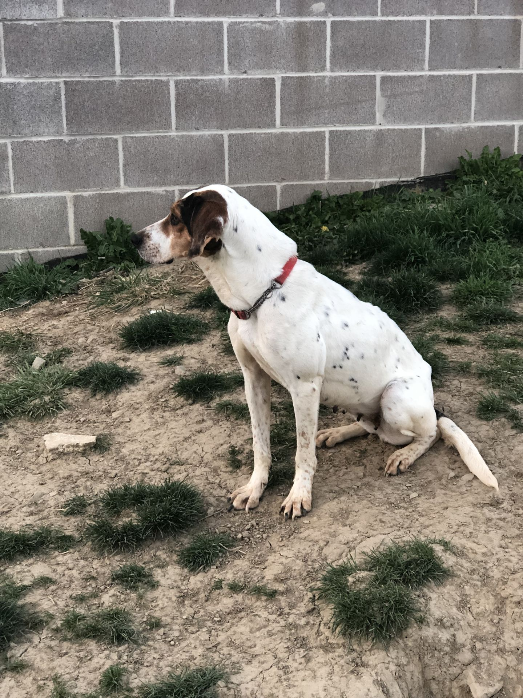
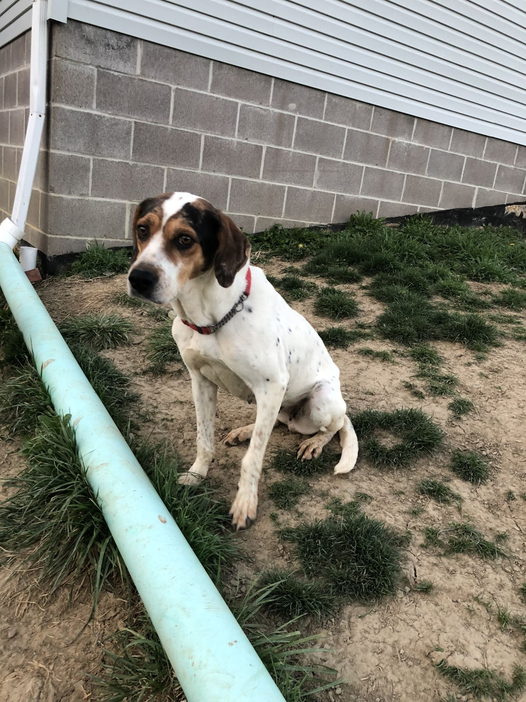
Coat length
Short
Coloration
Merle (Blue) , Tricolor (Brown, Black, & White)
House-trained
Yes
Health
Vaccinations up to date, spayed / neutered.
Good in a home with
Other dogs, children.
Prefers a home without
Cats.
Millie came to us from a high kill, Kentucky shelter with her litter of puppies. Everyone is now ready to leave for their forever homes! Millie was a wonderful momma and took great care of her babies but now she just wants someone to love and care for her forever!
If interested in adopting please fill out and submit an application!
Adoption fees and procedure is outlined in the app. Thanks!